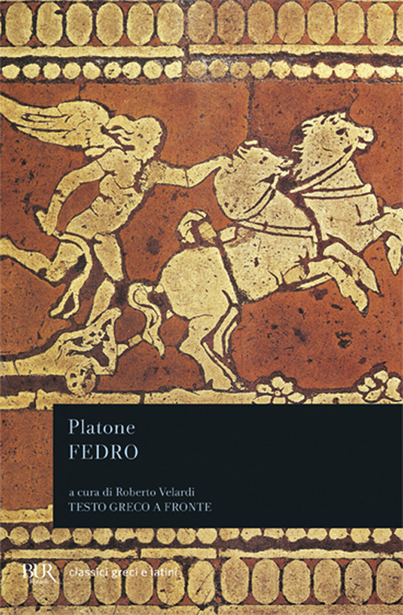

16:00 · 6 OPERE
La ragione dominante.
Il filo del discorso
Il primo capitolo di L’ultima dea d’Occidente sviluppa la critica di una ragione che vuole dominare il reale attraverso misure, definizioni e relazioni strumentali. Dr Divago oppone a questo orientamento la passione per la sapienza e la meraviglia, presentate come esperienze capaci di coinvolgere l’intera persona. La Pastorale di Beethoven accompagna l’immagine di un incontro con la natura che la descrizione non esaurisce. Il richiamo a Eraclito distingue intelligenza ed erudizione, mentre la metafora del mare invita a prendere parte all’esperienza del pensare. Il confronto fra pensatori, mistici e quantificazione conduce poi al rapporto fra verità ed esistenza: l’esempio di Socrate e della chimera interroga la gerarchia implicita fra ciò che è reale e ciò che viene detto vero. Una frase di Dostoevskij introduce la critica alle semplificazioni della vita. La parte finale riporta al centro il limite umano e la mortalità, prima di valorizzare il dialogo socratico come pratica di formazione reciproca. Il significato di ragione dominante appartiene alla proposta teorica del relatore; la scheda distingue tale interpretazione dalle definizioni tecniche della logica e dai molteplici percorsi della filosofia antica.
I libri nel discorso

Teeteto, o sulla scienza
Identificazione probabile
Copertina: Feltrinelli · 1994 · traduzione di Luca Antonelli, introduzione di Salvatore Natoli, saggio di Davide Spanio
Immagine autentica dell’opera, controllata visivamente; l’edizione di riferimento non è attribuita al filmato.
Il collegamento platonico fra filosofia e meraviglia rinvia probabilmente al Teeteto 155d, senza titolo pronunciato.
Passaggio 2:10 ↗ · Fonti e libro ↗
Frammenti
Identificazione probabile
Copertina: BUR · a cura di Francesco Fronterotta, testo greco a fronte, 2013
Immagine autentica dell’opera, controllata visivamente; l’edizione di riferimento non è attribuita al filmato.
La massima attribuita a Eraclito sull’erudizione e l’intelligenza rinvia probabilmente al frammento DK B40.
Passaggio 4:24 ↗ · Fonti e libro ↗
Sulla natura
Identificazione probabile
Copertina: Bompiani · Testi a fronte · 2001
Copertina autentica controllata visivamente. Edizione di riferimento; non identifica l’esemplare usato o citato nel video.
Il nome Parmenide e il sentiero della persuasione suggeriscono i frammenti del poema, senza titolo pronunciato.
Passaggio 8:15 ↗ · Fonti e libro ↗
Metafisica
Identificazione probabile
Copertina: Bompiani · Il pensiero occidentale · 2004 · a cura di Giovanni Reale
Copertina autentica di riferimento, controllata visivamente. L’edizione non è identificata come quella usata nel video.
Aristotele e il principio di non contraddizione suggeriscono la Metafisica; titolo non pronunciato.
Passaggio 8:42 ↗ · Fonti e libro ↗
Delitto e castigo
Identificazione probabile
Copertina: BUR · introduzione di Clara Strada Janovic, edizione di riferimento 1983
Immagine autentica dell’opera, controllata visivamente; l’edizione di riferimento non è attribuita al filmato.
Il passo sulla logica e le molte possibilità della vita è riconoscibile nel discorso di Razumichin, parte III capitolo V; titolo non pronunciato.
Passaggio 9:03 ↗ · Fonti e libro ↗
Fedro
Identificazione probabile
Copertina: BUR · 2006 · a cura di Roberto Velardi
Immagine autentica dell’opera, controllata visivamente; l’edizione di riferimento non è attribuita al filmato.
La frase di Socrate sull’imparare dagli uomini e non dagli alberi rinvia probabilmente al Fedro 230d.
Passaggio 14:24 ↗ · Fonti e libro ↗